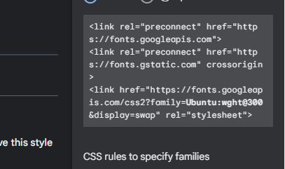

The 0em of line_height means that what is the height of the childran from his parents means the height of parents is multiply by on that number that is writhen in the 1em ok.
1/96pc pexil of an inches
lets play with fonts of Css
The address that is link in the head tag
The address that is writen in the font_family address